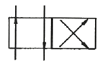
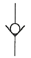
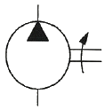
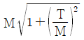
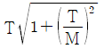
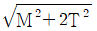
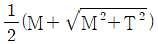

건설기계정비산업기사 (2020-06-06 기출문제)
1과목: 건설기계정비
1. 연료압력의 피드백, 분사량, 분사시기가 솔레노이드 밸브에 의해서 이루어지는 분사장치는?
- 분배형 분사장치
- 독립형 분사장치
- 커먼레일형 분사장치
- 캠샤프트 리스형 분사장치
(정답률: 83%)

2. 기중기에서 상부에 권상 와이어용 시브가 있고, 하부에 훅을 장치한 것은?
- 훅 블록 장치
- 붐 전도 방지장치
- 권과 방지장치
- 붐 기복 정지장치
(정답률: 77%)
3. 건설기계 충전장치에 사용되는 발전기에 대한 설명으로 틀린 것은?
- 직류발전기의 정류자는 전기자에서 발생한 교류를 직류로 바꾸어 준다.
- 교류발전기에서 발생되는 전압은 항상 일정하므로 전압 조정기가 필요 없다.
- 직류발전기의 조정기에는 컷아웃 릴레이, 전류 조정기, 전압 조정기가 필요하다.
- 교류발전기에서 발생되는 전류는 어느 한계값 이상 높아지지 않으므로 전류 조정기가 필요 없다.
(정답률: 75%)
4. 전자제어 디젤기관 시스템에서의 고장 발생 시 최소한의 운행이 가능하도록 하는 기능은?
- 타이머 기능
- 앵글라이히 기능
- 페일 세이프 기능
- 트랙션 컨트롤 기능
(정답률: 81%)
5. 덤프트럭에서 추진축이 진동하는 원인으로 틀린 것은?
- 추진축이 휘었다.
- 요크의 방향이 틀리게 조립되었다.
- 유니버셜 조인트 베어링이 파손되었다.
- 슬립 조인트부에 그리스가 너무 많이 주유되었다.
(정답률: 81%)
6. 배기가스 중 NOx를 감소시키기 위한 방법으로 가장 옳은 것은?
- 배기압력을 낮춘다.
- 흡기온도를 높인다.
- 엔진회전수를 낮춘다.
- 연소실의 온도를 낮춘다.
(정답률: 58%)
7. 기관의 마력이 25PS일 때 1000rpm에서 최대 토크를 나타낸다. 이때 클러치에 의해 전달되는 토크(kgf·m)는?
- 17.9
- 19.9
- 28.6
- 34.9
(정답률: 48%)
8. 프런트 아이들러에 대한 설명으로 틀린 것은?
- 트랙 부하에 의해 앞·뒤로 움직인다.
- 트랙 프레임 앞부분에 설치되어 돌아가는 앞바퀴이다.
- 트랙의 진행방향을 유도한다.
- 주행 중 전면에서 받는 충격을 완화시킨다.
(정답률: 55%)
9. 50m 떨어진 곳의 흙을 전진속도 50m/min, 후진속도 80m/min으로 삭토해서 운반하는 도저의 블레이드 용량이 4m3/회이고, 작업효율이 0.9라고 할 때 시간당 작업량은? (단, 기어변환 시간은 0.5분으로 하고, 토량환산계수는 1.0으로 한다.)
- 약 102m3/hr
- 약 111m3/hr
- 약 121m3/hr
- 약 132m3/hr
(정답률: 44%)
10. 냉방장치 정비 시 주의사항으로 틀린 것은?
- 환기가 잘되는 곳에서 작업한다.
- 냉매를 회수할 때에는 회수기를 사용한다.
- 냉매를 취급할 때는 보안경과 장갑을 착용한다.
- 안전을 위해 냉매를 대기 중에 방출한 후 압축기를 교환한다.
(정답률: 84%)
11. 축간거리가 2.5m이고 바깥쪽 바퀴의 조향각이 30°, 안쪽 바퀴의 조향각이 35°인 덤프트럭의 최소회전반경(m)은? (단, 바퀴의 접지면 중심과 킹핀과의 거리는 15cm 이다.)
- 3.15
- 4.85
- 5.15
- 6.15
(정답률: 53%)
12. 주로 매립공사에 사용하며 준설된 토사를 파이프라인으로 장거리 배송하는 준설선은?
- 디퍼식 준설선
- 버킷식 준설선
- 펌프식 준설선
- 그래브식 준설선
(정답률: 62%)
13. 스크레이퍼의 주요 구성품이 아닌 것은?
- 보울
- 에이프런
- 롤
- 이젝터
(정답률: 55%)
14. 타어이식 건설기계에 사용되는 자재이음의 종류에 해당하지 않는 것은?
- 등속 조인트
- 추친축 조인트
- 플렉시블 조인트
- 트러니언 조인트
(정답률: 50%)
15. 전압 조정기의 전압검출 및 정전압 회로 등에 사용하는 반도체는?
- 트랜지스터
- 제너 다이오드
- 서미스터
- 발광 다이오드
(정답률: 64%)
16. 납산 축전지 설페이션 현상의 직접적인 원인이 아닌 것은?
- 과방전이 되었을때
- 전해액에 불순물이 포함
- 장시간 방전 상태로 방치
- 터미널과 단자 과다 조임
(정답률: 81%)
17. 굴삭기에서 시동 스위치를 off시켜도 엔진이 정지되지 않을 때 점검할 항목과 가장 거리가 먼 것은?
- 시동 스위치를 점검한다.
- 연료 차단 솔레노이드의 작동상태를 점검한다.
- 시동 릴레이 연결 배선의 전류 흐름을 점검한다.
- 연료 차단 솔레노이드와 연결된 배선의 전류 흐름을 점검한다.
(정답률: 69%)
18. 지게차의 작업용도에 의한 분류에 해당하지 않는 것은?
- 롤레 지게차
- 사이드 클램프 지게차
- 로드 스태빌라이저 지게차
- 3단 미스터 지게차
(정답률: 65%)
19. 감속 제동 장치 중 엔진 브레이크식 제동장치에 관한 설명으로 옳지 않은 것은?
- 기관의 회전 저항을 이용하는 제동이다.
- 흡·배기 행정 시 발생하는 펌핑 손실을 이용한다.
- 변속 단수는 최고 단수를 사용한다.
- 엔진브레이크 사용 시 변속단수에 따라 제동력이 각각 달라진다.
(정답률: 79%)
20. 밸런싱 코일식 유압제의 설명 중 틀린 것은?
- 반도체의 증폭작용을 이용한다.
- 발신부는 일종의 가변저항기이다.
- 엔진의 유압에 의해 다이어프램이 저항값을 변화시킨다.
- 계기부는 두 개의 코일로 구성되며, 코일에 발생되는 전자력에 의해 지침이 움직인다.
(정답률: 57%)
2과목: 내연기관
21. 압축비가 15.6이고 초기압력 P1이 1.0atm인 공기를 단열·압축하는 경우 압축압력 P2는 약 몇 atm인가? (단, 공기의 비열비는 1.4)
- 6.41
- 15.6
- 21.84
- 46.81
(정답률: 16%)
22. 기관에서 윤활이 필요한 부품으로 틀린 것은?
- 피스톤
- 점화 플러그
- 밸브작동 기구
- 크랭크축의 베어링
(정답률: 84%)
23. 다음 중 피스톤의 재료로 많이 사용되는 로 엑스(Lo-ex)의 합금 주요 원소는?
- Cu, Si, Al
- Cu, Si, Sb
- Pt, Sb, Al
- Pt, Sb, Mn
(정답률: 60%)
24. 다음 중 내연기관의 기계효율을 높이는 방법으로 틀린 것은?
- 윤활이 잘 되도록 한다.
- 기관의 평형을 좋게 한다.
- 베어링 마찰계수를 크게 한다.
- 배기가스의 배출 저항을 줄인다.
(정답률: 84%)
25. 디젤기관에서 밸브오버랩에 대한 설명으로 틀린 것은?
- 체적효율이 감소된다.
- 흡입행정에서 흡입 효율이 높아진다.
- 배기밸브는 하사점 전에 열려 상사점 후에 닫힌다.
- 흡입밸브는 상사점 전에 열려 하사점 후에 닫힌다.
(정답률: 66%)
26. 왕복기관인 캠과 태빗에 오프셋(Off-set)하는 주된 이유로 가장 적절한 것은?
- 열전도를 높이기 위하여
- 정숙한 운전을 위하여
- 측압을 감소시키기 위하여
- 한 부분만의 마로를 감소시키기 위하여
(정답률: 52%)
27. 압축비가 9인 가솔린기관의 이론열효율(%)은? (단,공기의 비열비는 1.3이다.)
- 약 47.3
- 약 48.3
- 약 49.3
- 약 50.3
(정답률: 48%)
28. 4행정 사이클 기관의 총배기량이 3.67L, 회전수 3600rpm, 도시평균 유효압력이 0.9MPa인 기관의 도시출력은 약 몇 kW인가?
- 77.1
- 80
- 99.1
- 110
(정답률: 36%)
29. 2-질량(mass) 플라이휠의 장점으로 틀린 것은?
- 진동소음을 최소화 시킨다.
- 동기화 기구의 마멸이 적다.
- 클러치의 압력판이 필요 없다.
- 클러치 디스크의 댐퍼스프링이 필요 없다.
(정답률: 57%)
30. 디젤기관의 조속기(거버너)에 대한 설명으로 틀린 것은?
- 원활한 운전상태의 유지를 위해 공전속도를 제어한다.
- 최저속도에서 제어래크를 이용하여 분사시기를 조절한다.
- 기관의 회전속도에 따라 분사펌프로부터 분사되는 연료량을 제어한다.
- 최고회전속도를 제한하여 과도한 회전속도 상승으로 인한 손상을 방지한다.
(정답률: 53%)
31. 100℃의 혼합기를 단열·압축하여 압축 후의 온도가 603℃가 되었다면 압축비는 약 얼마인가? (단, 단열지수는 1.4로 한다.)
- 1.24
- 3.38
- 8.45
- 9.25
(정답률: 31%)
32. 가솔린 300cm3을 완전히 연소시킬 때 약 몇 m3의 공기가 필요한가? (단, 혼합비는 14.7 : 1, 가솔린의 비중은 0.73, 공기의 밀도는 1.206 kg/m3 이다.)
- 2.67
- 3.22
- 3.66
- 4.41
(정답률: 29%)
33. 디젤기관 배기가스 후처리 장치 중 고형미립자(PM)를 감소시키는 것은?
- NSC
- EGR
- SCR
- DPF
(정답률: 75%)
34. 저위발열량이 44kJ/g인 연료로 기관을 운전할 때 연료소비율은 약 몇 g/kW·h 인가? (단, 효율이 45% 이다.)
- 182
- 125
- 130
- 134
(정답률: 23%)
35. 연소결과로 발생되는 H2O는 어느 상을 나타낼 때 고위발열량을 내게 되는가?
- 기상
- 고상
- 액상
- 고상과 액상 모두
(정답률: 62%)
36. 기관에서 냉각장치의 기능이 아닌 것은?
- 연소실의 냉각
- 흡입공기의 가열
- 윤활유의 냉각
- 내구, 신뢰성의 확보
(정답률: 74%)
37. 소기효율에 큰 영향을 주지 않는 사항은?
- 흡기밸브
- 소기압력
- 행정/안지름비
- 기관회전수
(정답률: 47%)
38. 가스터빈 기관의 구조에서 주요 구성요소로 틀린 것은?
- 터빈
- 압축기
- 연소실
- 크랭크 축
(정답률: 67%)
39. 디젤기관에서 연료의 연소를 위해 필요한 연료분무 상태로 틀린 것은?
- 무화가 좋아야 한다.
- 후적이 있어야 한다.
- 관통력이 커야 한다.
- 분산이 골고루 이루어져야 한다.
(정답률: 69%)
40. 내연기관에서 동력이 발생하는 행정은?
- 흡입
- 압축
- 폭발
- 배기
(정답률: 76%)
3과목: 유압기기 및 건설기계안전관리
41. 다음 전환밸브의 기호가 나타내는 포트수와 위치수로 옳은 것은?

- 2포트 2위치 밸브
- 4포트 2위치 밸브
- 2포트 4위치 밸브
- 4포트 4위치 밸브
(정답률: 53%)
42. 유압 장치의 특징으로 적절하지 않은 것은?
- 무단 변속이 가능하다.
- 고압에서 누유의 위험이 있다.
- 오일에 기포가 섞여 작동이 불량할 수 있다.
- 먼지나 이물질에 의한 고장의 우려가 없다.
(정답률: 74%)
43. 다른 수압 면적을 가진 유압 실린더 등을 사용하여 시스템의 일부 압력을 높여주는 회로로 가장 적합한 것은?
- 증압 회로
- 서지 회로
- 감압 회로
- 무부하 회로
(정답률: 67%)
44. 아래 기호의 명칭은?

- 무부하 밸브
- 감압 밸브
- 체크 밸브
- 릴리프 밸브
(정답률: 77%)
45. 펌프 토출량이 0.01m3/s 이고, 사용하는 유압 실린더의 피스톤 직경이 85mm일 경우 이 유압 실린더의 전진운동 속도는 약 몇 m/s 인가?
- 0.88
- 1.76
- 3.52
- 5.28
(정답률: 34%)
46. 펌프의 보조로 사용하며, 유압 에너지를 축적하고 압력을 보상해주는 기기는?
- 어큐뮬레이터
- 스트레이너
- 개스킷
- 오일 쿨러
(정답률: 80%)
47. 실린더의 선정 시 주의사항으로 적절하지 않은 것은?
- 행정 길이가 긴 경우는 로드의 강도를 고려한다.
- 충격에 대한 완충 능력이 부족하다면 외부 완충기의 설치를 검토한다.
- 부하에 대한 실린더 길이의 선정 기준으로 좌굴 강도를 기준으로 할 수 있다.
- 빠른 속도를 필요로 하는 경우 부하율을 크게 잡는다.
(정답률: 53%)
48. 유압 작동유가 구비해야 할 조건으로 적절하지 않은 것은?
- 비압축성일 것
- 점도지수가 작을 것
- 화학적으로 안정적일 것
- 압력변화에 따른 체적변화가 작을 것
(정답률: 66%)
49. 체크밸브, 릴리프 밸브 등에서 압력이 상승하고 밸브가 열리기 시작하여 어느 일정한 흐름의 양이 인정되는 압력은?
- 오버라이드 압력
- 오리피스 압력
- 크래킹 압력
- 리시드 압력
(정답률: 48%)
50. 아래 기호의 명칭은?

- 단동 실린더
- 공기압 모터
- 유압 모터
- 유압 펌프
(정답률: 62%)
51. 산업안전보건법상 안전·보건표지의 용도별 색채로 틀린 것은?
- 녹색 - 안내
- 파란색 - 경고
- 빨간색 - 금지
- 노란색 – 경고
(정답률: 79%)
52. 연료보관용 드럼통의 올바른 보관방버은?
- 드럼통을 세워 놓는다.
- 마개는 느슨히 잠근다.
- 직사광선에 닿도록 보관한다.
- 통풍이 잘되는 실내에 보관한다.
(정답률: 67%)
53. 기관 조립 시 주의사항 중 옳지 않은 것은?
- 기관을 떼어낼 때에는 기관 전용 걸이를 사용한다.
- 건식 라이너 삽입 시에는 해머로 때려 넣는다.
- 피스톤과 커넥팅로드를 조립 시에는 조립방향에 주의한다.
- 크랭크 샤프트에서 메인 베어링 캡은 토크렌치를 사용하여 규정의 토크로 조인다.
(정답률: 82%)
54. 콘크리트 펌프 호퍼 내에서 콘크리트가 응결되거나 흡입구가 막히는 긴박한 상황이 자주 발생될 때 점검할 곳은?
- 혼합장치
- 교반장치
- 급수장치
- 배송장치
(정답률: 57%)
55. 다음 중 일반 수공구를 사용하여 작업을 할 때 안전 및 주의사항으로 가장 적합하지 않은 것은?
- 스패너를 사용할 때는 볼트나 너트의 크기에 알맞은 스패너를 선택하여 바르게 사용한다.
- 작업을 쉽게 한다는 생각으로 스패너에 다른 스패너 또는 쇠 파이프를 연결하여 사용해서는 안 된다.
- 스패너나 렌치류를 사용하여 너트를 풀 때는 몸 바깥쪽으로 밀어서 풀어야 한다.
- 조정 렌치를 사용할 때는 조정 조에 잡아당기는 힘이 가해져서는 안 된다.
(정답률: 72%)
56. 안전모의 사용 방법 및 보관 방법 중 틀린 것은?
- 큰 충격을 받은 것과 외관에 손상이 있는 것은 사용을 피해야 한다.
- 안전모를 차에 싣고 다닐 때는 뒤창 밑에 두어서는 안 된다.
- 통풍을 목적으로 모체에 구멍을 뚫을 경우에는 드릴로 구멍을 낸다.
- 모체가 오염되어 유기용제를 사용해야 하는 경우 강도에 영향이 없어야 한다.
(정답률: 79%)
57. 가스용접에서 토치 취급 방법으로 틀린 것은?
- 작업에 적당한 팁을 선택하고 산소와 아세틸렌의 압력을 조정 유지한다.
- 토치에 점화할 때는 성냥 등을 사용하여 점화한다.
- 팁이 과열된 때는 적은 양의 산소만 통하게 하여 서서히 냉각시킨다.
- 작업을 시작하기 전에는 호스나 토치의 연결 부분이 완전히 체결되었는가를 확인하여 사용한다.
(정답률: 75%)
58. 리프트의 유지 및 관리 시 유의사항 중 틀린 것은?
- 리프트의 상태와 현장실정에 적합한 정비 및 관리가 이루어지도록 한다.
- 방호장치를 제거하거나 기능을 정지시킨 후 사용 시 최저속도로 조작한다.
- 작업구역에 관계자 외에는 출입을 금지한다.
- 적재하중을 초과하는 하중을 걸어서 사용해서는 안 된다.
(정답률: 82%)
59. 드릴 작업 시 지켜야 할 사항이 아닌 것은?
- 보호 안경을 착용한다.
- 공작물을 단단히 고정시킨다.
- 작업 중 칩을 입으로 불어서 제거한다.
- 공작물과 드릴을 수직으로 유지하며 작업한다.
(정답률: 81%)
60. 다음 중 안전의 3요소가 아닌 것은?
- 교육요소
- 기술요소
- 관리요소
- 자본요소
(정답률: 77%)
4과목: 일반기계공학
61. 비틀림 모멘트(T)와 굽힘 모멘트(M)를 동시에 받는 재료의 상당 비틀림 모멘트(Te)를 나타내는 식은?




(정답률: 45%)
62. 미끄럼 베어링과 비교한 구름 베어링의 특징이 아닌 것은?
- 기동 토크가 작다.
- 충격 흡수력이 우수하다.
- 폭은 작으나 지름이 크게 된다.
- 표준형 양산품으로 호환성이 높다.
(정답률: 39%)
63. 한쪽 또는 양쪽에 기울기를 갖는 평판 모양의 쐐기로서 인장력이나 압축력을 받는 2개의 축을 연결하는데 주로 사용되는 결합용 기계요소는?
- 키
- 핀
- 코터
- 나사
(정답률: 52%)
64. 측정치의 통계적 용어에 관한 설명으로 옳은 것은?
- 치우침(bias) - 참값과 모평균과의 차이
- 오차(error) - 측정치와 시료평균과의 차이
- 편차(deviation) - 측정치와 참값과의 차이
- 잔차(residual) - 측정치와 모평균과의 차이
(정답률: 46%)
65. 무기재료의 특징으로 틀린 것은?
- 취성파괴의 특성을 가진다.
- 전기 절연체이며 열전도율이 낮다.
- 일반적으로 밀도와 선팽창계수가 크다.
- 강도와 경도가 크고 내열성과 내식성이 높다.
(정답률: 42%)
66. 테이퍼 구멍을 가진 다이에 재료를 잡아 당겨서 가공제품이 다이 구멍이 최소단면 형상 치수를 갖게 하는 가공법은?
- 전조 가공
- 절단 가공
- 인발 가공
- 프레스 가공
(정답률: 60%)
67. 압력 제어 밸브의 종류가 아닌 것은?
- 시퀀스 밸브
- 감압 밸브
- 릴리프 밸브
- 스풀 밸브
(정답률: 62%)
68. 다음 중 변형률(Strain)의 종류가 아닌 것은?
- 세로 변형률
- 가로 변형률
- 전단 변형률
- 비틀림 변형률
(정답률: 39%)
69. 다음 중 지름 10mm인 원형 단면에서 가장 큰 값은?
- 단면적
- 극관성 모멘트
- 단면계수
- 단면 2차 모멘트
(정답률: 40%)
70. 축열식 반사로를 사용하여 선철을 용해, 정련하는 제강법은?
- 평로
- 전기로
- 전로
- 도가니로
(정답률: 55%)
71. 피복아크 용접봉에서 피복제 역할이 아닌 것은?
- 용융 금속을 보호한다.
- 아크를 안정되게 한다.
- 아크의 세기를 조절한다.
- 용착금속에 필요한 합금원소를 첨가한다.
(정답률: 63%)
72. 작동유의 점도와 관계없이 유량을 조정할 수 있는 밸브는?
- 셔틀 밸브
- 체크 밸브
- 교축 밸브
- 릴리프 밸브
(정답률: 39%)
73. 두랄루민의 주요 성분원소로 옳은 것은?
- 알루미늄 – 구리 – 니켈 - 철
- 알루미늄 – 니켈 – 규소 - 망간
- 알루미늄 – 마그네슘 – 아연 - 주석
- 알루미늄 – 구리 – 마그네슘 – 망간
(정답률: 54%)
74. 너트의 종류 중 한쪽 끝부분이 관통되지 않아 나사면을 따라 증기나 기름 등의 누출을 방지하기 위해 주로 사용되는 너트는?
- 캡 너트
- 나비 너트
- 홈붙이 너트
- 원형 너트
(정답률: 69%)
75. 다음 중 차동 분할 장치를 갖고 있는 밀링머신 부속품은?
- 분할대
- 회전 테이블
- 슬로팅 장치
- 밀링 바이스
(정답률: 53%)
76. 속도가 4m/s 로 전동하고 있는 벨트의 인장측 장력이 1250N, 이완측 장력이 515N 일 때, 전달동력(kW)은 약 얼마인가?
- 2.94
- 28.82
- 34.61
- 69.22
(정답률: 18%)
77. Fe-C 평형상태도에서 공정점의 탄소함유량은 몇 % 인가?
- 0.86
- 1.7
- 4.3
- 6.67
(정답률: 40%)
78. 내경 600mm의 파이프를 통하여 물이 3m/s의 속도로 흐를 때 유량은 몇 m3/s인가?
- 0.85
- 1.7
- 3.4
- 6.8
(정답률: 35%)
79. 양끝을 고정한 연강봉이 온도 20℃에서 가열되어 40℃가 되었다면 재료 내부에 발생하는 열응력은 몇 N/cm2인가? (단, 세로탄성계수는 2100000 N/cm2, 선팽창계수는 0.000012/℃이다.)
- 50.4
- 504
- 544
- 5444
(정답률: 45%)
80. 스프링 백 현상과 가장 관련 있는 작업은?
- 용접
- 절삭
- 열처리
- 프레스
(정답률: 63%)